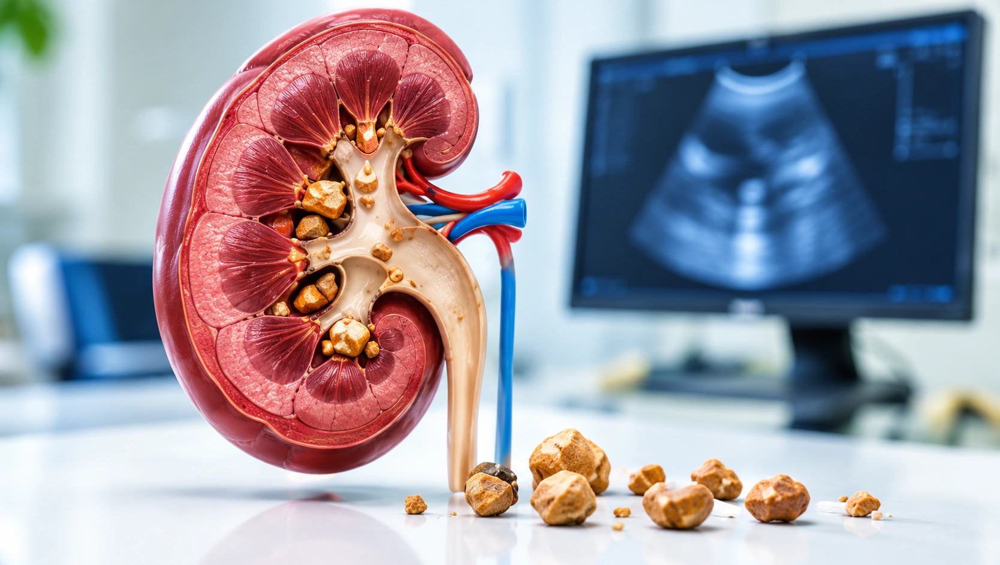
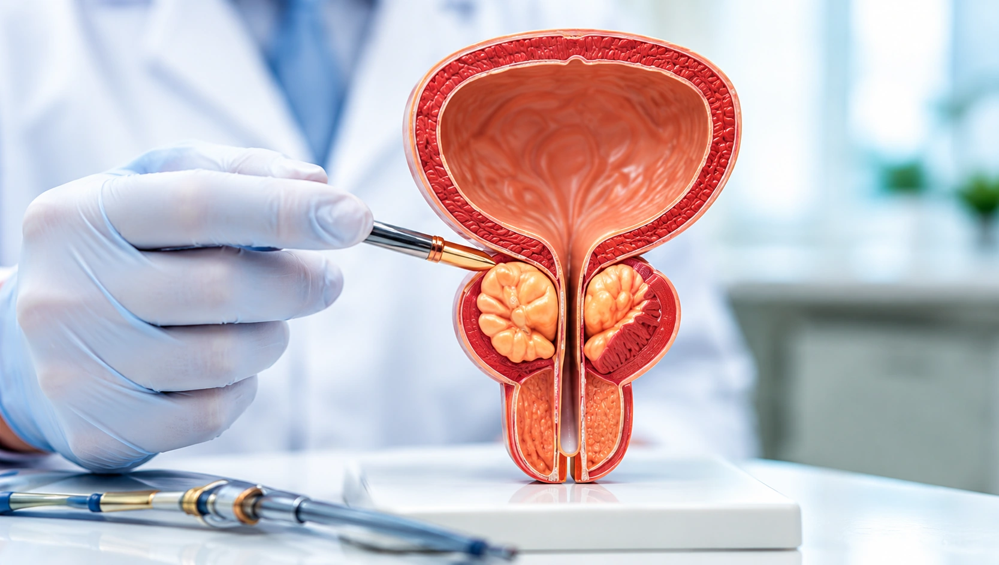
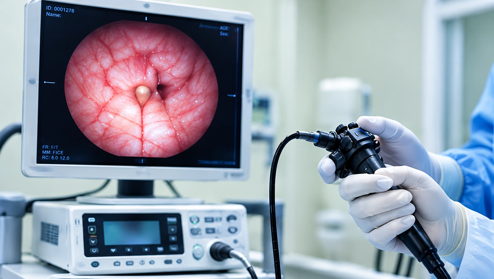
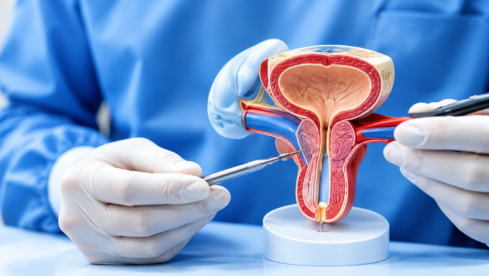
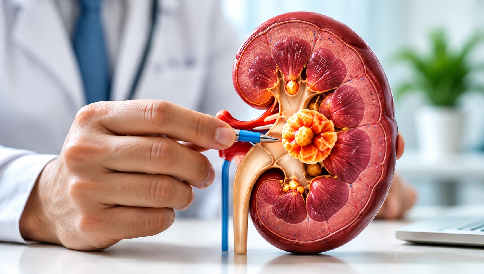
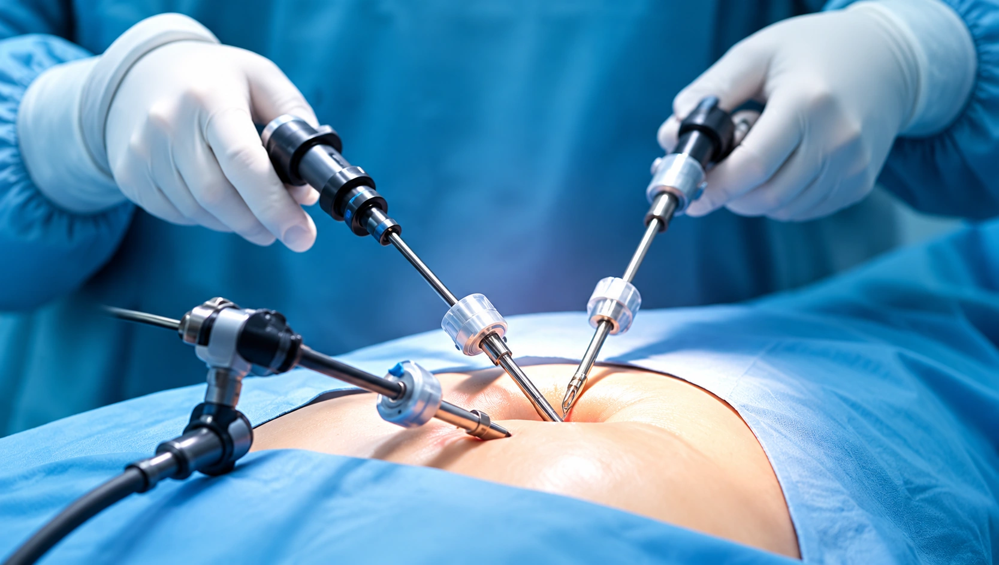

Kidney Stone Treatment
Modern options for kidney stones, focused on relief, recovery and prevention.
Know MoreAdvanced diagnosis, compassionate treatment and modern urology care — helping you live healthier, with confidence and peace of mind.
Comprehensive treatment for kidney, urinary and men's health conditions, using modern techniques and personalized care.

Modern options for kidney stones, focused on relief, recovery and prevention.
Know More

Minimally invasive care for bladder and urinary tract conditions.
Know More
Specialized assessment and treatment for urethral conditions.
Know More
Confidential guidance and evaluation for men's reproductive health.
Know More
Modern minimally invasive surgical techniques designed to support recovery.
Know MoreDr. Ketul S. Patel is a dedicated Urologist, Andrologist and Kidney Transplant Surgeon with expertise in advanced urological care. He focuses on providing accurate diagnosis, effective treatment and compassionate care for all kidney and urology related problems.
Know More About Dr. Ketul S. PatelA welcoming environment, attentive support and modern facilities come together to make your care journey comfortable and clear.
Focused expertise and guidance.
Care supported by technology.
Care that respects your needs.
Support at every step.
A patient-focused approach built around expertise, compassion and better experiences.
We combine modern diagnostic tools and treatment approaches with experienced clinical care to help patients make informed decisions.
About Our TechnologySpecialist-led assessment and care.
Contemporary tools and techniques.
Plans built around individual needs.
Clear guidance and support.
Care across a range of urology needs.
Accessible care in Mehsana.
Kind words from people who have trusted us with their care.
I received clear guidance throughout my treatment. The team was caring, professional and made me feel comfortable at every step.
The staff explained everything patiently and the hospital environment was welcoming. I felt supported from consultation to follow-up.
Professional care and a thoughtful approach. All my questions were answered, which helped me feel confident about my treatment.
Find answers to common questions about appointments, treatment and your visit.
View All FAQsGet expert guidance for kidney and urology care. Contact our team to enquire about an appointment.